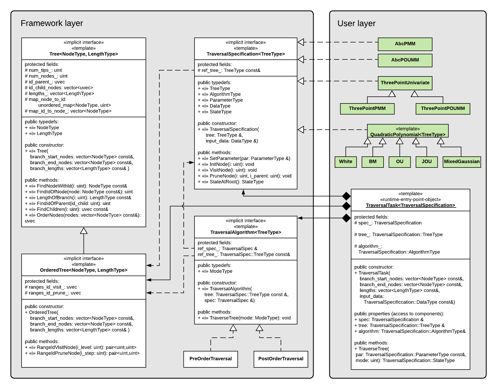

SPLITTClasses.RmdThe figure below represents a UML class diagram of the SPLITT library:

The library is divided in two layaers:
CustomTraversalSpecification class defining all typedefs and methods of the interface TraversalSpecification. The methods that should be defined by the user are:
SetParameter(par): sets parameter values, such as model parameters, prior to tree-traversal.InitNode(i): called for each node, i, at the beginning of the traversal; performs node-specific initialization, based on the parameter-values and the input data; can be executed both, sequentially or in parallel, depending on the selected parallelization mode; this function is the perfect place to define the calculation of node-specific state fields or other node-specific data, which depend on the parameters, the tree and the input data but do not depend on the state/data associated with other nodes;VisitNode(i): called for the root (in pre-order traversals only) and for every internal and tip node, i, (both, pre-order and post-order traversals) after InitNode(i) and either after VisitNode(j) and PruneNode(j, i) has been called for each \(j\in Desc(i)\) in post-order traversals, or after VisitNode($Parent(i)) has been called in pre-order traversals. This method is suitable for implementing the logic in the the function \(R_i\), depending on the parameters, the input data, and the state of the nodes, on which i’s state depends.PruneNode(i, i_parent): called solely in post-order traversals for every node, i, after the call to VisitNode(i) and before calling VisitNode(Parent(i)). This method is suitable for updating fields associated with Parent(i) before it gets visited. It is logically equivalent to leave the implementation of PruneNode(i, i\_parent) empty and have the implementation of VisitNode(i) consult the states of its daughter nodes.StateAtRoot(): returns the state associated with the root of the tree.The bridge between the two layers is provided by an object of the TraversalTask template class. Once the TraversalSpecification implementation has been written, the user instantiates a TraversalTask object passing the tree and the input data as arguments. This triggers the creation of the internal objects of the framework, i.e. an OrderedTree object maintaining the order in which the nodes are processed and a PreOrderTraversal or a PostOrderTraversal object implementing different parallelization modes of the two traversal types. In the ideal use-case, the TraversalTask’s TraverseTree() method will be called repeatedly, varying the model parameters, the input data and branch lengths on a fixed tree topology. This encompasses all scenarios where a model is fitted to a fixed tree and data, e.g. ML or Bayesian PCM inference.
Apart from base R functionality, the patherit package uses a number of 3rd party R-packages:
Canty, Angelo, and Brian Ripley. 2016. Boot: Bootstrap R (S-Plus) Functions. R-Package. https://cran.r-project.org/web/packages/boot/index.html.
Dowle, Matt, and Arun Srinivasan. 2016. Data.table: Extension of ‘Data.frame‘. https://CRAN.R-project.org/package=data.table.
Mitov, Venelin, and Tanja Stadler. 2017. Fast and Robust Inference of Phylogenetic Ornstein-Uhlenbeck Models Using Parallel Likelihood Calculation. BiorXiv. http://biorxiv.org/content/early/2017/05/30/115089.
Paradis, Emmanuel, Simon Blomberg, Ben Bolker, Julien Claude, Hoa Sien Cuong, Richard Desper, Gilles Didier, et al. 2016. Ape: Analyses of Phylogenetics and Evolution. https://CRAN.R-project.org/package=ape.
Wickham, Hadley. 2016. Testthat: Unit Testing for R. https://CRAN.R-project.org/package=testthat.